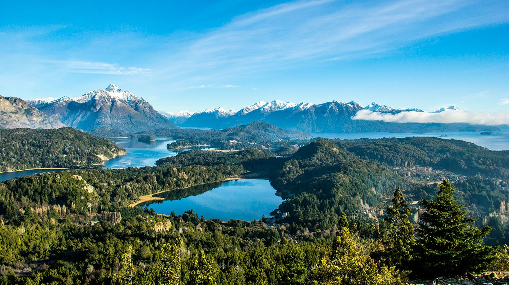
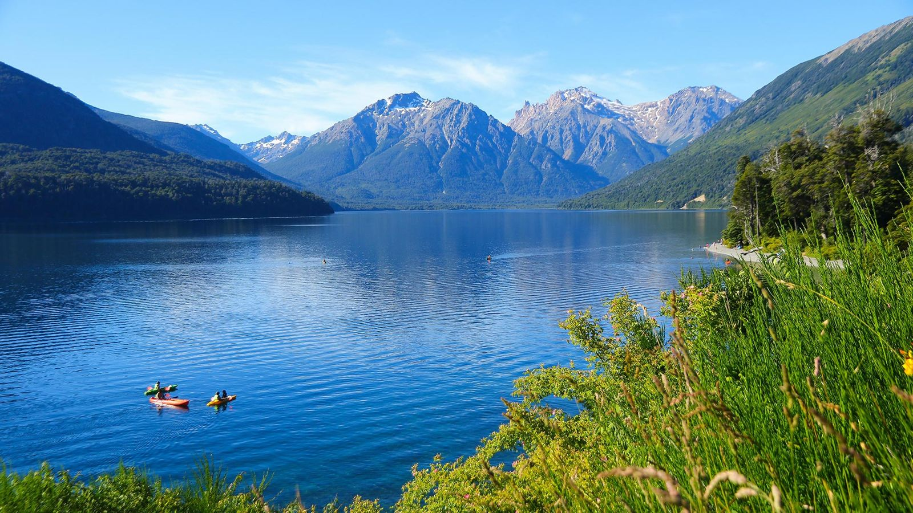
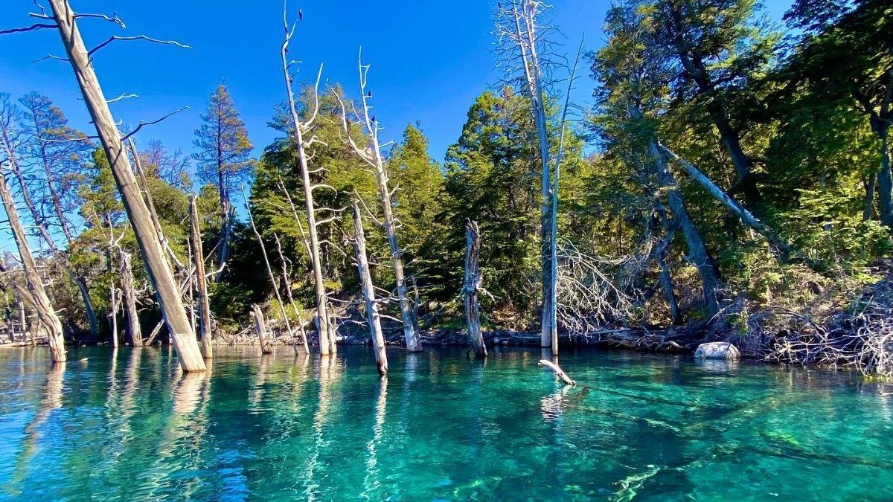
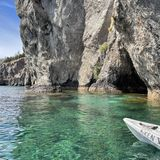
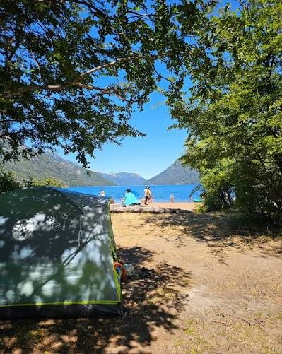
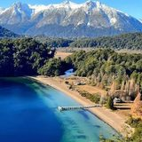
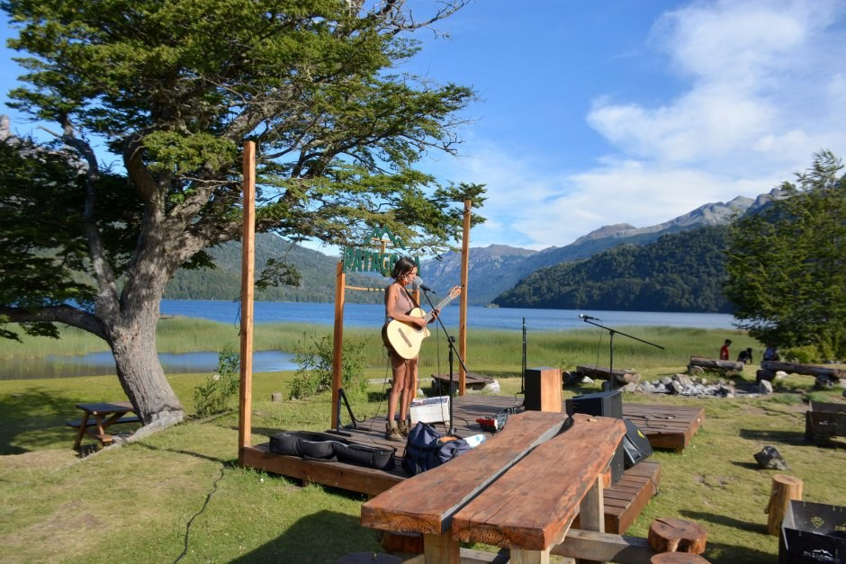

Día 1
Viernes
Montevideo a Paso del Puerto
Salimos de tarde, después del trabajo, por la Ruta 3. Asado en el campo y a dormir temprano, porque el sábado arrancamos a las 6.
Dormimos en Paso del Puerto, Ruta 3 km 250.
Bariloche, Villa Traful y los lagos de la RN 40, en auto desde Montevideo. Segunda quincena de enero de 2027.
Para ir necesitamos de cada uno 5 días de licencia y unos US$1.000. Cuantos más nos sumemos, mejor.
Salimos un viernes de tarde y volvemos el domingo de la semana siguiente. Abajo está el viaje día por día: el mapa te sigue mientras leés.
Nueve noches, cinco en el sur. En gris, los días de ruta; en verde, los días allá.
Salimos de tarde, después del trabajo, por la Ruta 3. Asado en el campo y a dormir temprano, porque el sábado arrancamos a las 6.
Dormimos en Paso del Puerto, Ruta 3 km 250.
Cruzamos la frontera en Fray Bentos antes de que se cargue. Gualeguaychú, el puente Zárate–Brazo Largo, la RN 6 y la RN 5 hasta La Pampa. Los choferes rotan cada dos o tres horas.
Dormimos en Santa Rosa, la opción más lógica para cortar el viaje. a definir
Cruzamos la Ruta del Desierto de mañana y despiertos: son 205 km sin servicios ni señal, así que cargamos nafta en Chacharramendi. Después Neuquén, la RN 237 junto al Limay y la bajada a Bariloche al atardecer.

Dormimos en la casa frente al Nahuel Huapi, dos noches.
De mañana, playa en Villa Tacul, sobre el Nahuel Huapi. De tarde, Playa Sin Viento, en el lago Moreno. A la noche, Cirse. Si el día pide otra cosa: Playa Leones en el Mascardi, o lancha a Isla Victoria y Playa del Toro.

Dormimos en la casa en Bariloche.
Salimos temprano por la RN 237 y la RP 65 hasta Villa Traful. Primero Playa La Puntilla; después, lancha al Bosque Sumergido, la isla y sus playas. De tarde seguimos una hora más, hasta Pichi Traful.


Dormimos en el camping de Pichi Traful, acampe libre y sin servicios.
De mañana, el Espejo Chico, a media hora del camping: agua turquesa y quieta. De tarde volvemos a la playa de Pichi Traful, o probamos el Espejo Grande. Segunda noche de carpa.


Dormimos en el camping de Pichi Traful.
Llegamos temprano a Falkner para agarrar buen lugar. De mañana, la caminata a la cascada Ñivinco, sin dejar nada a la vista en el auto, o playa en el Villarino. De tarde, el Falkner. A la noche, el camping se pone de fiesta. Para los que quieran más: los Pozones del Caleufú, con una hora y pico de ripio.

Dormimos en el camping Falkner.
Salimos bien temprano por San Martín de los Andes, Junín y Collón Curá hasta la RN 237. Neuquén, y otra vez el desierto, ahora de tarde. Manejan los que más durmieron.
Dormimos en Santa Rosa, igual que a la ida. a definir
El tramo más corto de la vuelta: llegamos con luz para el asado y el descanso.
Dormimos en El Retiro, el campo en Gualeguaychú.
Frontera en Fray Bentos y ruta tranquila a casa. Llegamos a la tarde, con tiempo para descansar antes del lunes.
Dormimos en casa.
Dos por día, uno de mañana y otro de tarde, con la conservadora llena. Agua de deshielo, fría y transparente; acá están dibujados a la misma escala.
Por persona, con margen para salidas e imprevistos, calculado con 4 personas por auto.
Nafta, peajes, carta verde y dos noches de parada en ruta. Dormimos en Paso del Puerto y El Retiro.
Más el auto de alquiler en el mes más caro del año y la valija paga.
Ahorramos entre US$300 y US$400 por persona. A cambio, pasamos 5 noches en el sur en vez de 7, con lugar en los autos para carpas, comida y lo que queramos llevar.
Primero la fecha: elegila en enero y los días del viaje de arriba se actualizan.